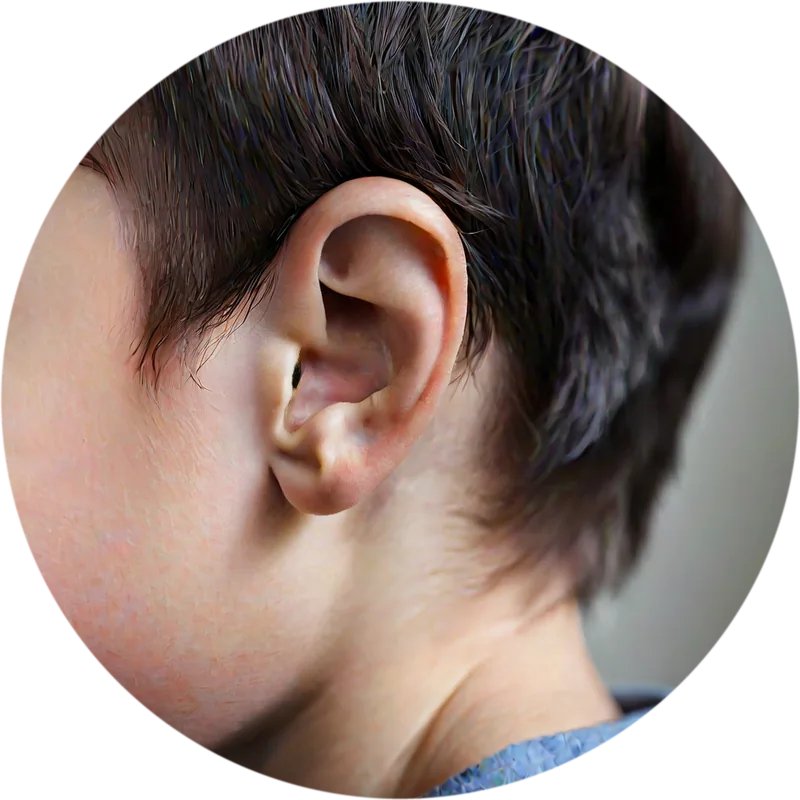
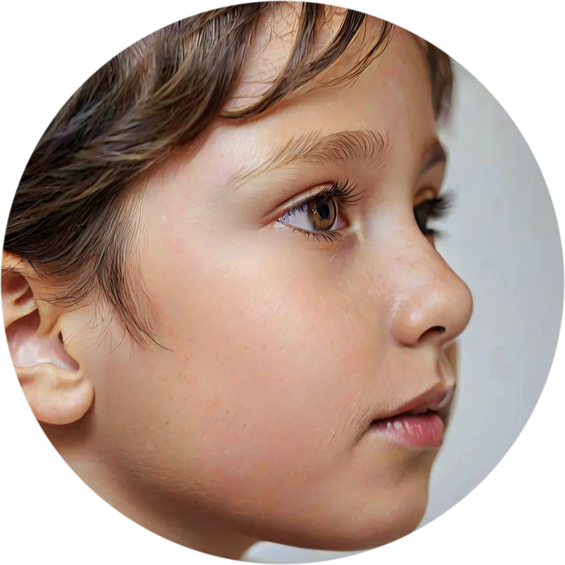
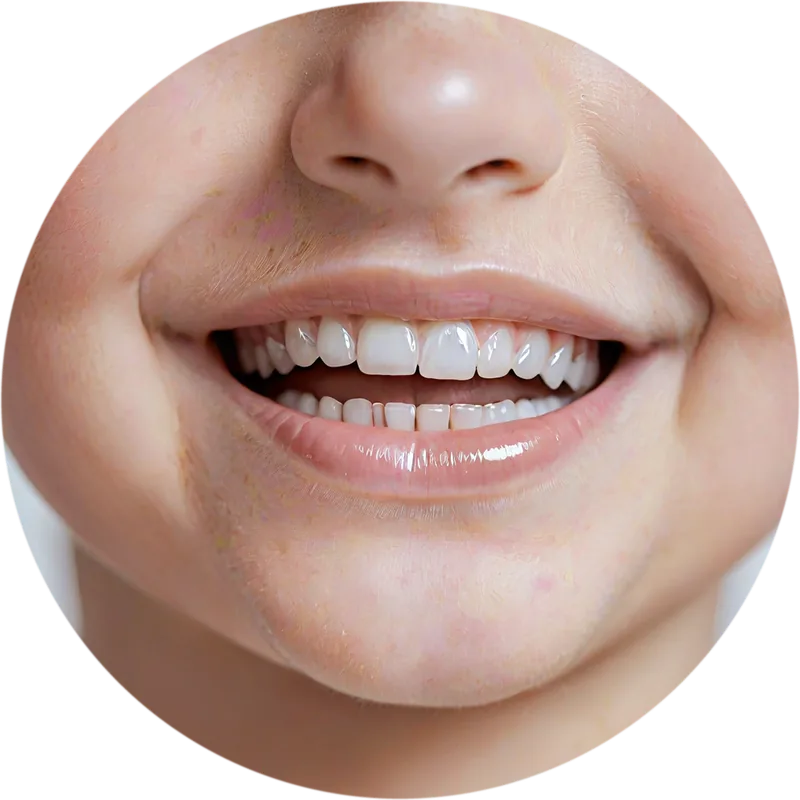
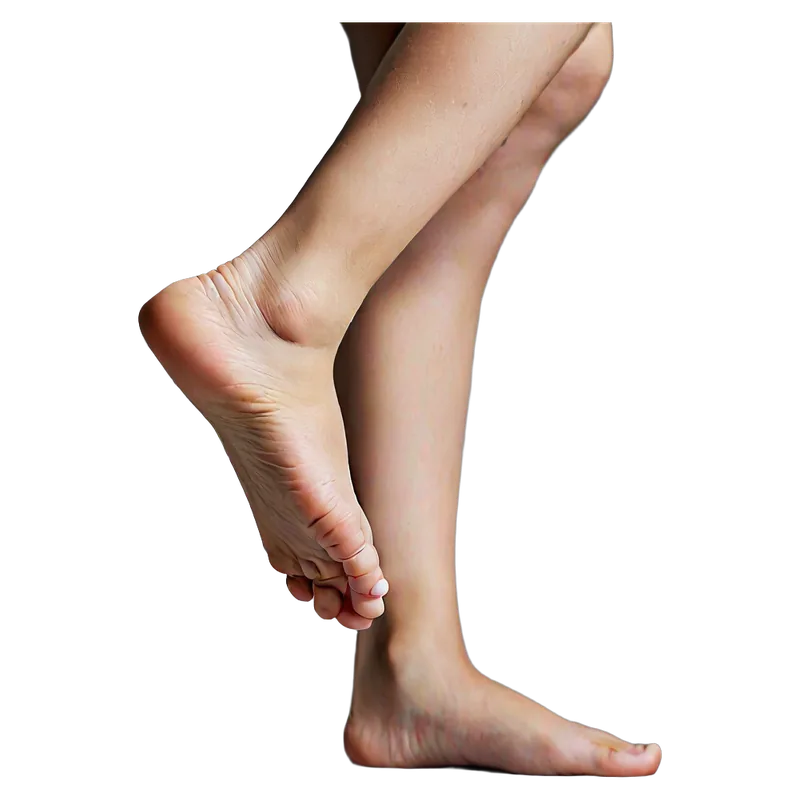
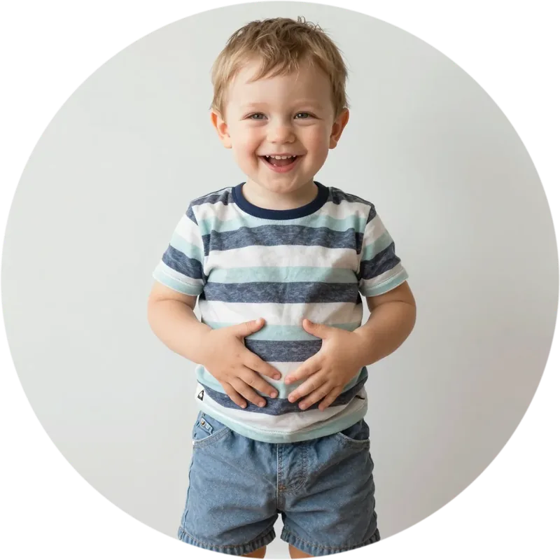

رَأْس
كِتَابِي الْأَوَّل
جِسْمِي
صِغَارُ الضَّاد
21-body · page 1 · front cover
رَأْس
21-body · page 2 · item 01
شَعْر
21-body · page 3 · item 02
عَيْن
21-body · page 4 · item 03
أُذُن

21-body · page 5 · item 04
أَنْف

21-body · page 6 · item 05
فَم

21-body · page 7 · item 06
أَسْنَان
21-body · page 8 · item 07
لِسَان
21-body · page 9 · item 08
يَد

21-body · page 10 · item 09
قَدَم

21-body · page 11 · item 10
بَطْن

21-body · page 12 · item 11
إِصْبَع
21-body · page 13 · item 12
أَيْنَ الْعَيْنُ؟
21-body · page 14 · question 1
أَيْنَ الْيَدُ؟
21-body · page 15 · question 2
أَيْنَ الْأُذُنُ؟
21-body · page 16 · question 3
أَيْنَ الْأَنْفُ؟
21-body · page 17 · question 4
أَيْنَ الْبَطْنُ؟
21-body · page 18 · question 5
كُلُّهَا مَعًا!
شَعْر
عَيْن
أُذُن
أَنْف
فَم
أَسْنَان
لِسَان
قَدَم
بَطْن
إِصْبَع
21-body · page 19 · all together
صِغَارُ الضَّاد
يتعرّف طفلك على أجزاء جسمه بصور حقيقية واضحة.
من عمر سنة إلى ٣ سنوات
ISBN / BARCODEprinter places it here
21-body · page 20 · back cover